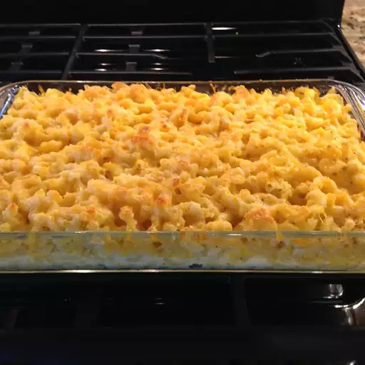

Macaroni and Cheese

Description
A lovely baked macaroni and cheese that will leave your guests mouth watering.
The recipe is so simple that even the most novice of cooks can follow along.
Ingredients
- 1(16 ounce) package of elbow macaroni
- 1/2 cup evaporated milk
- 2 eggs
- 1 (8 ounce) container sour cream
- 1 teaspoon black pepper
- 1 1/2 cups shredded Cheddar cheese
- 1/2 cup grated Parmesan Cheese
- 1 tablespoon butter
Steps
- Preheat the oven to 350 degrees F(175 degrees C). Lightly grease a casserole dish.
- Bring a large pot of lightly salted water to a boil. Add pasta and cook for 8 to 10 minutes, or until al dente; drain and rinse with cold water.
- Mix milk, egggs, sour cream, seasoning salt, and pepper in a bowl.
- Layer macaroni, Cheddar cheese, and milk mixture into the prepared casserole dish until full. Sprinkle Parmesan cheese and pour melted butter on top.
- Bake in the preheated oven until golden and bubbly, about 20 to 30 minutes.